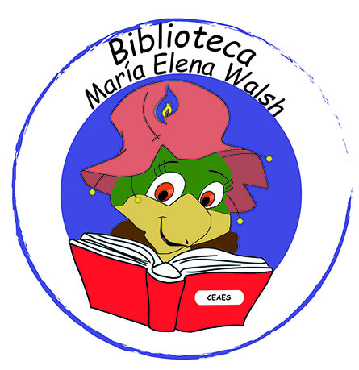
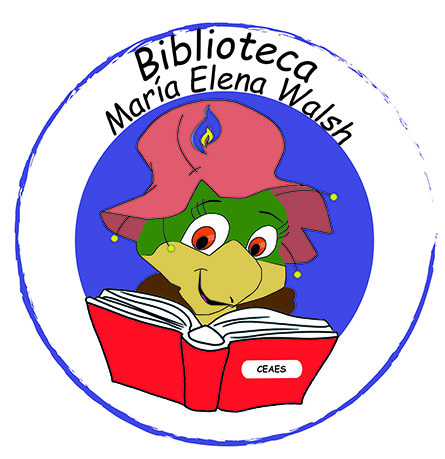

El logo de la biblioteca fue bastante en grupo, primero nos pusimos en grupo de a cuatro cada uno d elos grupos tenia una idea, con mi grupo tuvimos la idea de manuelita leyendo un libro pero era muy dificil y entonces acudimos a una tortuga leyendo un libro. Despues todos los grupos unimos las ideas y quedo manuelita leyendo un libro ya que uno de los grupos logor hacer a manuelita y bueno nosotros el libro. Me impresionó mucho el resultado me gusto mucho, quedo bastante interesante REINAGURACION:
Discurso del Rector Lic. Ricardo Barboza
Buenos días. Hoy 23 de abril celebramos el día internacional del Libro, dispuesta por la UNESCO en conmemoración del fallecimiento de Miguel de Cervantes Saavedra, Inca Garcilaso de la Vega y William Shakespeare. Estos autores fallecieron el 23 de Abril, pero en distintos años. Fueron grandes exponentes de la cultura y la literatura.
Pero, además, elegimos esta fecha para la inauguración de nuestra biblioteca con su nuevo nombre.
El año pasado, en el marco del cuadragésimo aniversario del retorno de la democracia, los chicos de 4to año (que hoy están en 5to) llevaron a cabo el proyecto de elección del nombre de nuestra Biblioteca. Los candidatos fueron:
En una votación muy cerrada, con el 25.39% de los votos, el nombre vencedor fue María Elena Walsh, escritora y poetisa argentina, autora de cuentos y canciones que nos atravesaron a todos en nuestra infancia: gracias a María Elena bailamos con el Mono Liso, fuimos a París con Manuelita, cantamos al sol como la cigarra…
Pero... ¿qué tienen que ver los libros, las bibliotecas y la democracia?
Bueno, las bibliotecas no son depósitos de libros (aunque algunos oficien de guarda) sino que tienen vida propia, ¿y quienes le dan esa vida? Las personas que trabajan en ella y los usuarios; y uno de sus mayores propósitos es su uso. Una biblioteca no tiene sentido de ser si no se utiliza. Una biblioteca ES en tanto y en cuanto se use. ¿Y quiénes pueden utilizarla? Cualquier persona que tenga una necesidad de información. Cualquier persona.
La información que albergan los libros de nuestra biblioteca está disponible para todos aquellos que lo requieran, es la libertad y la posibilidad de elegir qué quiero leer, a qué juego quiero jugar, qué película o cortometraje voy a ver.
La biblioteca permite una democratización de la información y el conocimiento, nos permite conocer nuestra historia, nos enseña que ejercitar la memoria es fundamental para construir nuestra identidad como pueblo y como personas, nos da herramientas que nos permitirá tener autonomía e independencia. Nos enseña compromiso y responsabilidad. Nos habilita al debate respetuoso, al pensamiento crítico y al encuentro entre pares.
Hoy es un día de festejo, de felicidad, pero también de reflexión. Este día nos invita a pensar qué rol queremos ocupar como actores sociales. Cada uno de ustedes tiene el compromiso de cuidar y habitar este espacio que de a poco vamos reconstruyendo, no solo para que hoy le den uso, sino para que el día de mañana siga en pie, siendo parte fundamental de la historia e identidad de nuestro colegio.
Muchas gracias y felicitaciones a los estudiantes de 5to año que hicieron este proyecto posible, tanto en las elecciones como en el armado de la hermosa cartelera de bienvenida que nos recibe cuando entramos a la biblioteca, y a los docentes y directivos que les brindaron su apoyo en todo momento. También a todos los estudiantes que se acercaron a sufragar.
Sin nada más que decir, queda inaugurada nuestra biblioteca, la biblioteca MARÍA ELENA WALSH.
 
